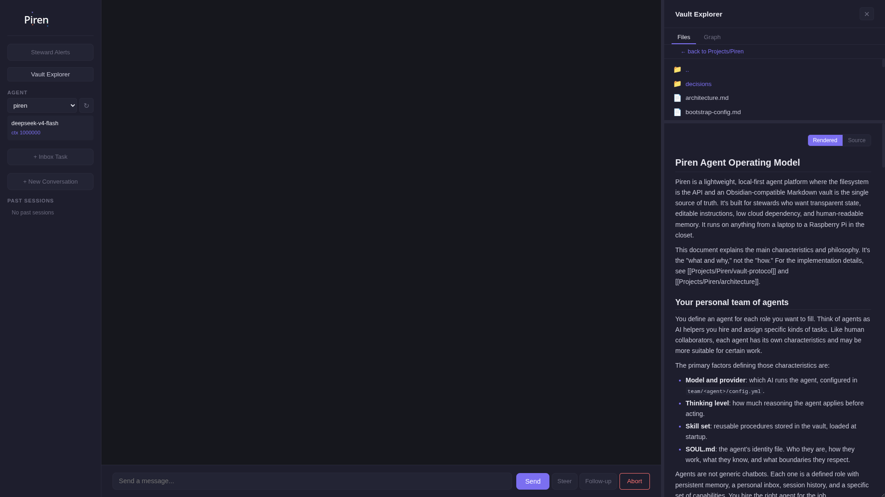

See it in action
A short walkthrough of Piren 0.1.0: the vault, the inspectable tools, and a fleet sharing one substrate.

Built for developers and homelab enthusiasts who want full control over a local fleet of agents, without hidden state or heavyweight frameworks.
Piren starts with Pi Coding Agent and adds what a multi-device fleet needs: inspectable state, explicit tools, safe gateways, and edge-device operations. All grounded in a Markdown vault you can read and debug.
npm install -g --install-links github:Odiobill/piren
A short walkthrough of Piren 0.1.0: the vault, the inspectable tools, and a fleet sharing one substrate.
A few months ago I was running ten agents across three devices using Hermes Agent. When I tried to get agents on different machines to collaborate, sharing a Kanban board and picking up each other's tasks, things broke in ways Hermes was never designed to handle.
What I needed was not a more powerful framework. I needed something lighter: explicit task hand-off, shared state that lives in a file system I can read and debug, and a runtime small enough to run on a Raspberry Pi. I needed to be in charge, not the framework.
That is what Piren is. A vault-native runtime for a stewarded team of agents, built from the bottom up so you only carry the complexity you actually need.
Piren merges LLM-Wiki and Second Brain workflows with explicit multi-agent task execution. Boring on purpose, transparent by design.
Agent identity, memory, tasks, logs, skills, and cron jobs live in plain Markdown. Obsidian can be the source of truth. Nothing is hidden in a database.
No transparent shell or file interception. Agents call named tools like vault_read and project_append_log that you can read and audit.
Agents update handoffs, runbooks, ADRs, and skill candidates as visible artifacts, not hidden memory mutations. Everything is reviewable.
Lightweight enough for a Raspberry Pi or UDOO X86. Transparency and debuggability over maximal framework surface area.
Lower token cost in practice. Heavier frameworks load agent personas, tool definitions, and persistent context into every request. Piren keeps startup context lean and loads only what the current task needs: skills on demand, vault reads as explicit tool calls. The context stays small because you control what enters it.
Install Piren on several devices, point them at one vault, and your agent is the same agent everywhere. If a device dies, the work continues on another.
Think of the vault as the office building and each Piren installation as an office in the same building on the same network. The agent is an employee whose identity, memory, and tools live in the building, not in any single office.
So when an engineer has the laptop and skills they need, they can do their job from any office. Install Piren on a Raspberry Pi in the closet, a desktop, and a laptop, point all three at one synced vault, and heimdall is the same agent on every machine: same SOUL.md, same pending inbox, same skills, same cron jobs.
This is what makes Piren fault-tolerant out of the box. Tasks and cron jobs are claimed by atomic file operations with active-device priority. If one device goes dark, the next eligible device picks up the pending inbox and the due cron jobs automatically, because the work lives in the shared substrate, not in a process on the dead machine. The opt-in scheduler (piren scheduler, or --dry-run for a zero-LLM preview) shows exactly which claims a device would pick up next.
Which machines may host which agents is an installation policy (allowed_agents), kept outside the vault. The vault carries the team; the installation decides which office it runs in today.
Four ways to reach your agents, one inspectable substrate underneath, plus the coordination primitives a fleet needs.
Agent selection, chat streaming, steering, approval gates, a read-only Vault Explorer with Files and Knowledge Graph tabs, and a context indicator. An emergency interface, not a config surface.
Telegram and Discord bots route conversations to your local runnable agents. One bot, many agents, local allowlists for access control.
A drop-in /api/v1/chat/completions endpoint. Point any OpenAI-compatible client at Piren and it just works.
Scheduled work is Markdown job files with active-device ownership, atomic claiming, and inspectable run records. No central database.
The vault follows Open Knowledge Format v0.1: concepts carry typed frontmatter, piren doctor audits conformance, and other OKF-aware tools can read the bundle.
Keep gateway, Telegram, Discord, and the scheduler always-on with one command. Piren generates systemd user units, with a tmux plus @reboot cron fallback for DietPi and stripped-down SBCs. Inspectable, reversible, no root.
Run piren setup for a guided walk: pick a vault, choose a Pi provider and API key, select a model, and configure gateways. Plus --help on every command.
Reusable procedures in vault/skills/, cataloged at startup and loaded on demand. Group-scoped skills sit between shared and agent-specific, so a team shares a skill pack without duplicating it.
Group agents by role to share skills and a fallback policy. When an agent can't pick up a task, piren agents --fallback recommends an eligible teammate, filtered by local policy. Read-only: nothing changes hands silently.
A device-local scheduler for inbox tasks and cron jobs, driven by heartbeat priorities and atomic claims. piren scheduler --dry-run previews the next claims with zero LLM calls, --once runs a single bounded tick, and piren scheduler runs the opt-in loop until you stop it. Claim-first, one item per tick, every run recorded in the vault. No hidden autonomy.
Add capabilities through npm packages declared in local config, loaded as Pi extension flags. Piren core stays minimal.
A minimal emergency interface: agent selection, streaming chat with tool calls, steering, approval gates, and a read-only Vault Explorer with Files and Knowledge Graph tabs. No model or config controls, by design.

Every action is an explicit, inspectable tool call: vault_read, decision_record, flag_steward. The agent's work leaves artifacts in the vault, not hidden memory.
Piren borrows the best ideas from heavier systems while staying vault-native and edge-friendly.
Hermes is a powerful, self-improving agent with database-backed memory and a rich TUI. Piren borrows its self-improvement thesis but realizes it as inspectable Markdown artifacts you can read in Obsidian, on hardware a Raspberry Pi can run.
OpenClaw is a single personal assistant with full system access and persistent memory that builds its own skills. Piren is a team knowledge substrate for a stewarded fleet: every agent's state is an auditable Markdown file, and operations stay local and fail-safe.
Most agent platforms hide operational state in databases. Piren keeps it in the vault: tasks are one Markdown file each, logs are append-only, sessions are summarized in place. You can debug the whole system from a terminal.
Piren natively merges Karpathy's LLM-Wiki and Second Brain workflows with multi-agent task execution, backed by an Open Knowledge Format v0.1 compliant vault that is portable outside Piren.
Piren now treats the vault as an OKF v0.1 bundle. Concept documents carry a required non-empty type: frontmatter field, Piren ships a pure conformance checker, and both piren doctor and the read-only vault_conformance_check() tool can audit drift without blocking work.
That matters because your agents' memory is no longer trapped in an app-specific database. It is plain Markdown, typed, linked, inspectable in Obsidian, cloneable with Git, and consumable by any future OKF-aware tool.
When one agent solves a problem, the next agent, or a future session, starts from the accumulated decision, runbook, or skill, not from rediscovery. The steward reviews and promotes; nothing is auto-applied. Raw traces stay evidence. Project docs and ADRs become synthesized truth. Skills become shared procedure.
One inspectable vault holds identity, tasks, sessions, skills, and knowledge for a whole team of agents.
Gateway transports are separate Pi RPC processes. The vault is always the source of truth.
Pi dependency, vault portability. Piren is built on Pi Coding Agent and tracks its public API surface. The vault is the stable layer: plain Markdown, Git-cloneable, readable without Piren. If the underlying engine changes, your agent state, knowledge, and task history remain intact and portable.
Install Piren, create a disposable vault, then start a local agent.